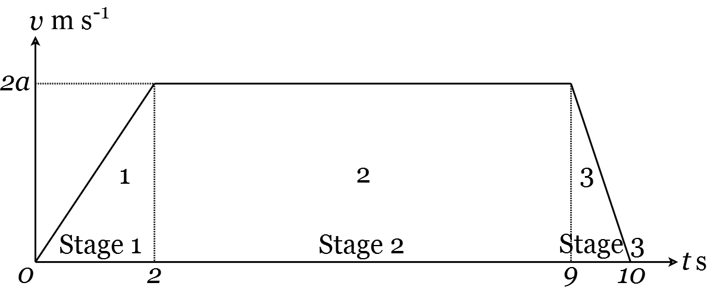
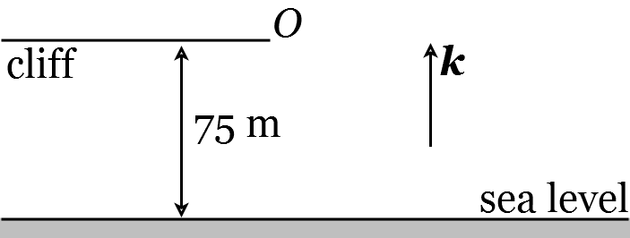

Lecture 17. Modelling the effect of gravity close to the Earth’s surface#
Gravity is a fundamental aspect of life on Earth. Almost all the motion we experience on a day-to-day basis is influenced by the effect of gravity. That is why it seems so weird and wonderful to see astronauts hovering in space capsules away from (most of) the effects of gravity, or bouncing on the Moon where the gravity is much lower than on Earth.
Consequently, being able to model the effect of gravity is a foundational aspect of our understanding of how the physical world works. There are still many unsolved problems related to understanding gravity out in the cosmos, where there are exotic objects like black holes, some of which are currently being explored by colleagues in this School. However, the effect of gravity close to the Earth’s surface is something humankind has known how to model with great accuracy for a very long time.
In this lecture we will derive the equations that govern motion under gravity close to the Earth’s surface. (These are sometimes known as the ‘suvat’ equations, for reasons that will become clear soon.) Then, in the next few lectures, we will show how to put these into practice in a variety of applications.
17.1 Motion under constant acceleration#
The key aspect of gravity near the Earth’s surface that eases the modelling process is that it is pretty-well constant, at about \(g \approx 9.8 \mathrm{~ms}^{-2}\). It is therefore useful to begin by generalising to any situation where acceleration is constant. So suppose an object is moving subject to a constant acceleration, \(\mathbf{a}\), where \(\mathbf{a}\) is a vector of arbitrary dimension. Denote its location at time \(t\) by \(\mathbf{r}(t)\) and its velocity by \(\mathbf{v}(t)\).
Recall from Lecture 15, Equation (180), that \(\ddot{\mathbf{r}}(t)=\dot{\mathbf{v}}(t)=\mathbf{a}\). Integrating once with resect to time gives
where \(\mathbf{u}\) is a constant vector. Notice that \(\mathbf{v}(0)=\mathbf{u}\) so \(\mathbf{u}\) is the initial velocity of the object. Since \(\mathbf{v}(t)=\dot{\mathbf{r}}(t)\), by Equation (178), we have \(\dot{\mathbf{r}}(t)=\mathbf{a} t+\mathbf{u}\), which we can integrate with respect to time to give
The initial location is \(\mathbf{r}(0)=\mathbf{c}\). It is often convenient to pick \(\mathbf{c}=\mathbf{0}\), the origin. In this case we have
Finally, by writing Equation (211) as \(\mathbf{a} t=\mathbf{v}(t)-\mathbf{u}\), we can substitute this into Equation (213) to give
You may have come across the one dimensional (1D) versions of Equations (211), (213), and (214) in school. However, if you have not seen these before, do not worry! We will have a look at them now.
17.2 Constant acceleration in 1D#
In 1D, as well as Equations (211), (213), and (214), we can derive a further equation. We will do this now. Let’s start by writing \(s=\mathbf{r}, u=\mathbf{u}, v=\mathbf{v}\), and \(a=\mathbf{a}\), as these are now scalars rather than vectors. In this notation, Equations (211), (213), and (214) become, respectively,
We start by squaring both sides of Equation (215) and rearranging
Next we use Equation (216) to give
Together, Equations (215), (216), (217), and (219) are often called the ‘suvat’ equations.
17.3 Examples#
Example 26
A lift starts from rest at time \(t=0\) and moves in three stages:
Stage 1. The lift moves upwards with constant acceleration for 2 s .
Stage 2. The lift moves upwards with constant velocity for 7 s .
Stage 3. The lift moves upwards with constant deceleration for 1s.
After this period of 10 s , the lift is at rest at a height of 34 m above its starting point. Find the acceleration in Stage 1.
Solution.
We start by drawing a graph of velocity over time (Figure 25).
Figure 25: Change in velocity over time.
Since velocity is the time-derivative of distance \((\dot{\mathbf{r}}=\mathbf{v}\), Equation 178), the total distance travelled is the area under the velocity-time graph. To find the area under the graph, we first need to find the speed after 2 s . Let \(a\) denote the acceleration in Stage 1 in \(\mathrm{ms}^{-2}\). Let \(v\) denote the speed after 2 s in \(\mathrm{ms}^{-1}\). Since the lift starts from rest in Stage 1, we can use \(v=u+a t\) (Equation 215) with \(u=0\), to give \(v=2 a\).
The total distance travelled by the lift is 34 m , so, working in m ,
Therefore \(a=2\), and the acceleration in Stage 1 is \(2 \mathrm{~ms}^{-2}\).
Example 27
A student standing on the edge of a cliff 75 m above sea level throws a stone vertically upwards with a speed of \(10 \mathrm{~ms}^{-1}\). Find the time at which the stone hits the water. You can assume the acceleration due to gravity is \(g=9.8 \mathrm{~ms}^{-2}\).
Solution.
As always, we start by drawing a sketch (Figure 26).
Figure 26: Throwing a stone off a cliff
Let \(O\) be the point of projection. Let \(s\) be the height (in metres) of the stone above the point of projection at time \(t\) (in seconds). The initial velocity of the stone is \(u=10 \mathrm{~ms}^{-1}\). Suppose the stone hits the water at time \(t\). Then \(s(t)=-75\). Therefore, by Equation (213), we have
Then, as \(t>0\), we have \(t=5.06\) to three significant figures.
Lecture 17 Homework exercises#
Exercise 33.
A person throws a stone vertically upwards at a speed of \(10 \mathrm{~ms}^{-1}\), releasing it at a location 1 m above the ground, then runs out of the way. Use the ‘suvat’ equations with \(a=g\) to find when the stone will hit the ground. The same person throws a feather in an identical manner. If you were to use the same model for the feather as you used for the stone, do you expect your estimate to be accurate? Why or why not? Do you expect it to be an underestimate or an overestimate?
Exercise 34.
A man fires a gun vertically upwards at head height and the bullet leaves the gun with a speed of \(1000 \mathrm{~ms}^{-1}\). How long does he have to move out of the way before the bullet hits him on the head? What is the speed of the bullet when it returns to his head height?
Exercise 35.
A woman drops a stone down a well. It takes 5 seconds before she hears the stone hit the water below. How deep is the well? What is the speed of the stone when it hits the water?
Exercise 36.
A bus sets off from a bus station \(P\). It accelerates uniformly for \(T_{1}\) seconds, covering a distance of 300 m . It then travels at a speed of \(V \mathrm{kmh}^{-1}\) for \(T_{2}\) seconds, covering a further distance of 1250 m . Finally, it decelerates uniformly for \(T_{3}\) seconds, coming to rest at a bus stop \(Q\). If the total time taken is 3 minutes, and \(2 T_{1}=3 T_{3}\), find the distance from \(P\) to \(Q\) and the values of \(T_{1}, T_{2}, T_{3}\) and \(V\).
Exercise 37.
A ball is dropped from a board 10 m above a pool. When does it hit the surface? Now assume that, at the same time the ball is dropped, a dolphin rises vertically from the water, with a speed of \(8 \mathrm{~ms}^{-1}\) when its head breaks the surface. Where and when does the dolphin head the ball?
Exercise 38.
A car is travelling along a straight level road at a constant speed of \(54 \mathrm{kmh}^{-1}\). At time \(t=0\), the car passes a lorry which is starting to accelerate from rest at a uniform rate of \(0.5 \mathrm{~ms}^{-2}\). Find the time that elapses and the distance covered when the lorry draws level with the car.